Text and images Copyright (C) 2002 Eric R. Jeschke and may not be used without permission of the author.
In this tutorial I'll show you some different ways to convert color RGB images to B&W:
We'll examine each of these in turn.
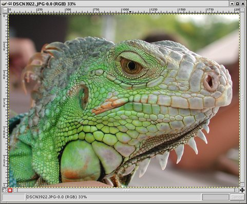
Here is an example image, loaded into The GIMP. I thought it might look nice as a black and white image.
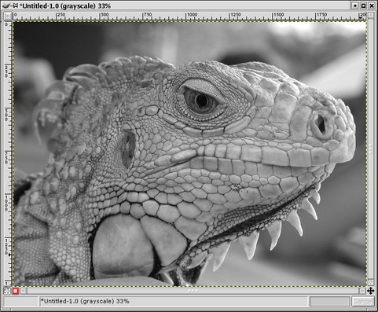 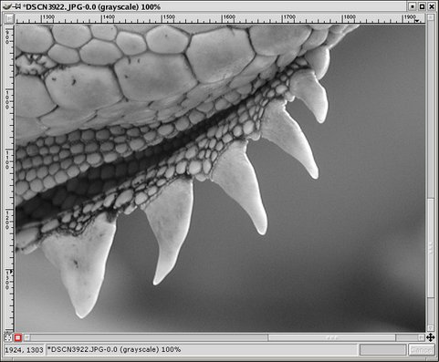
Here is what I get if I use the standard mode change to grayscale from RGB.
Duplicate the original image (Ctrl+D) and right-click on the copy. Select <Image>Image->Mode->Grayscale. I don't know how this conversion works in the GIMP, but I have read that Photoshop uses a standard mix of the RGB channels for their grayscale conversion: RED=30%, GREEN=59% and BLUE=11%. Supposedly this mix accounts for the eye's sensitivity to different colors. This formula does a pretty nice job in the general case, but some images do not work as well with it, particularly if the green channel component is not strong.
I suspect the GIMP uses a similar formula. My experiments with the Channel Mixer (more on this below) support this.
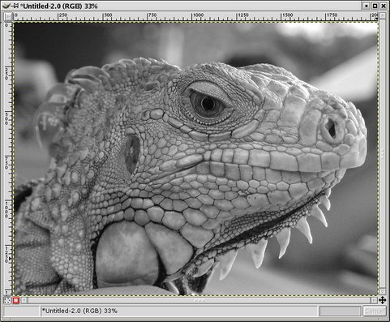 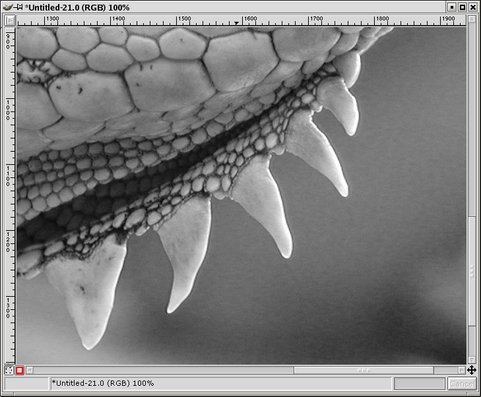
Here is what I get if I use desaturate instead. Duplicate the original image (Ctrl+D) and right-click on the copy. Select <Image>Image->Colors->Desaturate. Unlike the grayscale mode change above, the channels are not remixed in different percentages, so we should expect different results.
The result is visually different; note the increased contrast in the scales. Also, compare the 100% zoom views at right and in the previous grayscale example. You can see a lot more noise in the desaturated zoomed view (examine the blurred area below the spikes). The reason is that we are getting more blue and red channel noise, whereas in the grayscale mode change operation the algorithm is giving us a remix of 60% of the clean, detailed green channel.
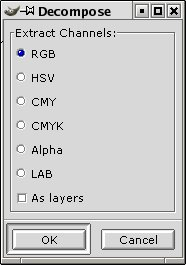
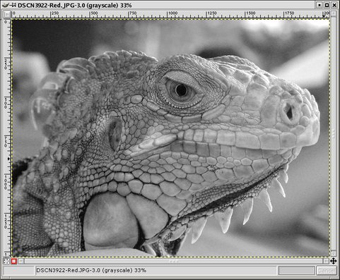 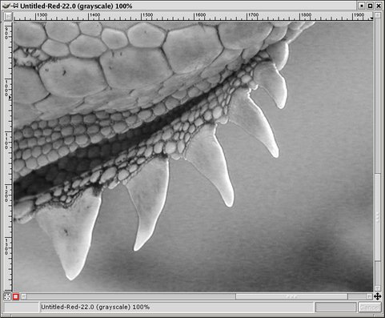
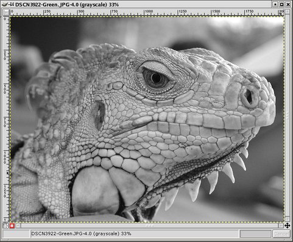 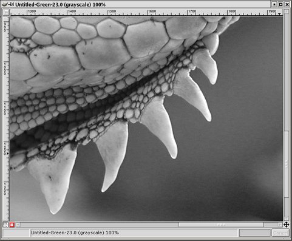
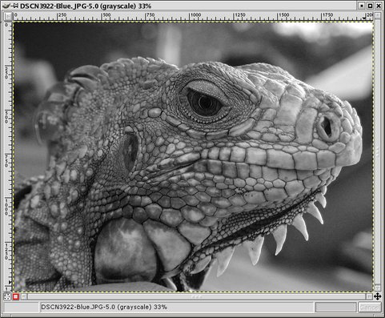 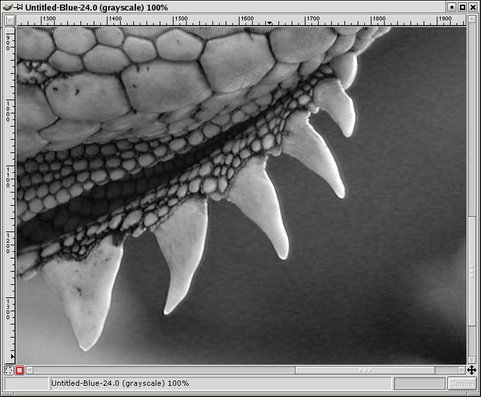
A third method is to consider the red/green/blue channels of the image. Each one can be represented as an independent grayscale image. Right-click on the original image and select <Image>Image->Mode->Decompose. Select the RGB option and click OK.
Here you can see the three channels: red (top), green (middle) and blue (bottom). You can see that the red channel contains most of the luminance information as well as a lot of noise, the green channel has the least noise, and the blue channel has shadows and noise. Often the blue channel has the most noise, but not in this case.
Very often the green channel contains an excellent B&W version of the image. If nothing else, taking a look at the RGB decomposition is important to give you an idea of where the important information is in your image, and where the noise is.
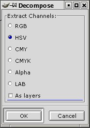 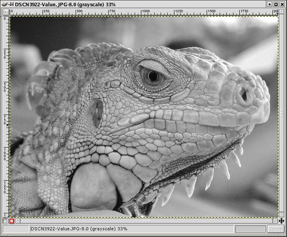
Another possibility is to decompose to Hue/Saturation/Value components and consider the Value image (the other two are not usually useful for this purpose). Right-click on the original image and select <Image>Image->Mode->Decompose. Select the HSV option and click OK.
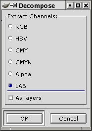 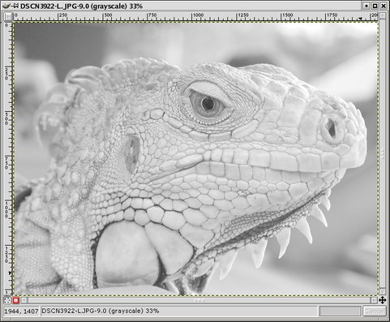
Yet another decompose option: LAB mode. Right-click on the original image and select Image/Mode/Decompose. Select the LAB option and click OK.
The Lightness component is a very interesting one because it contains all of the luninance information (whereas in RGB and HSV some of that information is spread into other components). You can very often see an expanded tonal range and discover hidden detail in the shadows by examining this component.
Not often useful by itself, but it can be combined with other layers for interesting results (see Tips at end of article).
Note: the LAB decompose option was not distributed with the version of the GIMP I got (ver 1.2.3). I don't know whether it comes bundled with newer versions. I downloaded it from the GIMP Plug-in Registry and compiled it myself.
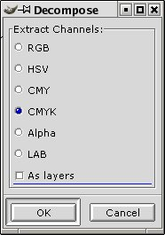 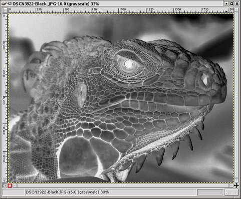
Just for fun I tried decomposing into CMYK. The Black channel is interesting: it resembles a negative.

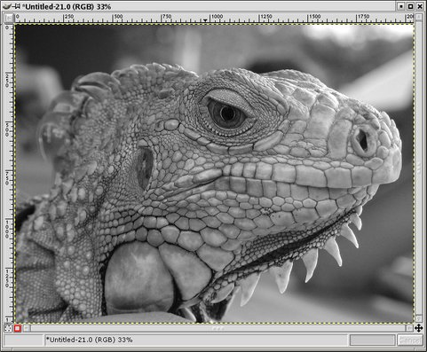 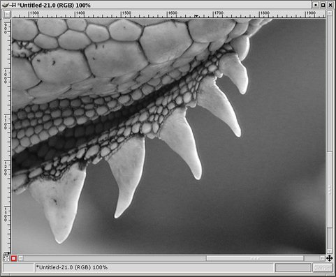
The final technique is the Channel Mixer filter. Right-click on the original image and select <Image>Filters->Color->Channel Mixer.
You'll get a dialog box like the one at right. Click the checkbox that says Monochrome. Make sure the preview checkbox is also checked.
Now play around with the levels of the three channels, seeing the results in the preview window. If you don't want to change the overall brightness of the image then the three values should add up to 100%, but feel free to experiment (checking the "Preserve Luminosity" box will also preserve the overall brightness of the image--see the Tips section below for more explanation of this option). Dialing in Red=30%, Green=59%, Blue=11% ought to give you something that looks nearly identical to what you would get with a mode change to grayscale.
When you have something that looks decent in the preview, click OK. If you don't like the look of the result, Undo (Ctrl+Z) and reapply the filter with different settings (Shift+Alt+F).
The advantage of the channel mixer is (obviously) flexibility. I like to decompose and examine the individual RGB channels, as we did earlier. That way I can see what is good and bad about each, and then use the channel mixer to combine them accordingly. In this example, I could see that the green channel did not really have much to offer, and had the least contrast in the iguana's scales; still, I mixed in 30% to help with the noise. I liked the blue channel for the great contrast it adds to the scales. Red's got a lot of noise, but I mixed in just enough to use some of the contrast and luminance information. You can see from the close up that it isn't quite as good the grayscale version in terms of noise, but the noise isn't too bad, and the trade-off is a lot more contrast and interest in the overall tonalities of the image.
Note: the channel mixer plug-in was not distributed with the version of the GIMP I got (ver 1.2.3). I don't know whether it comes bundled with newer versions. I downloaded it from the GIMP Plug-in Registry and compiled it myself.
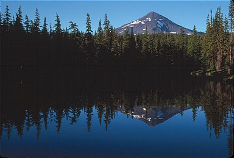 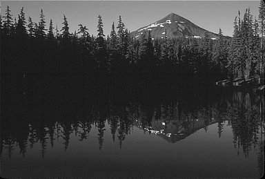
Left image: The original image.
Right image: Converted using channel mixer (80% green, 20% red).


Left image: The original image.
Right image: Converted using channel mixer.
The original tutorial (possibly with updated information) may be found here.